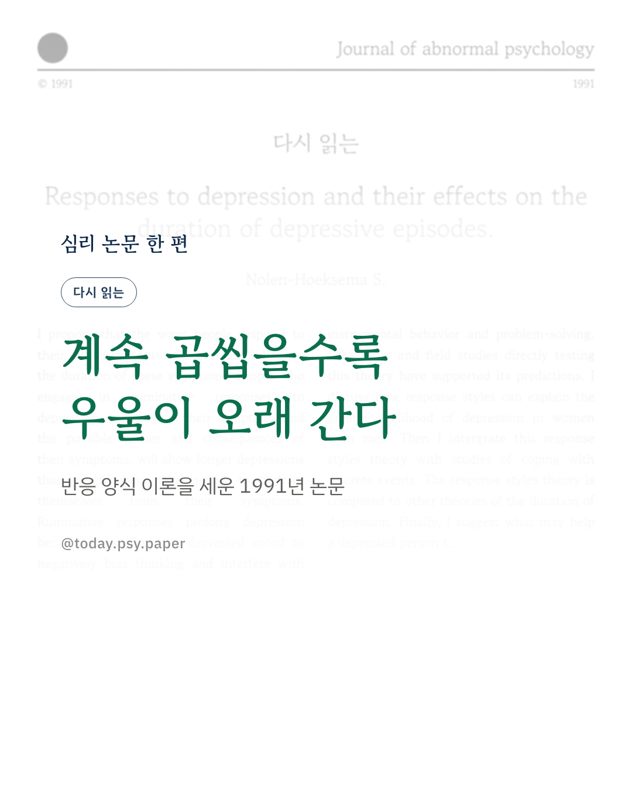
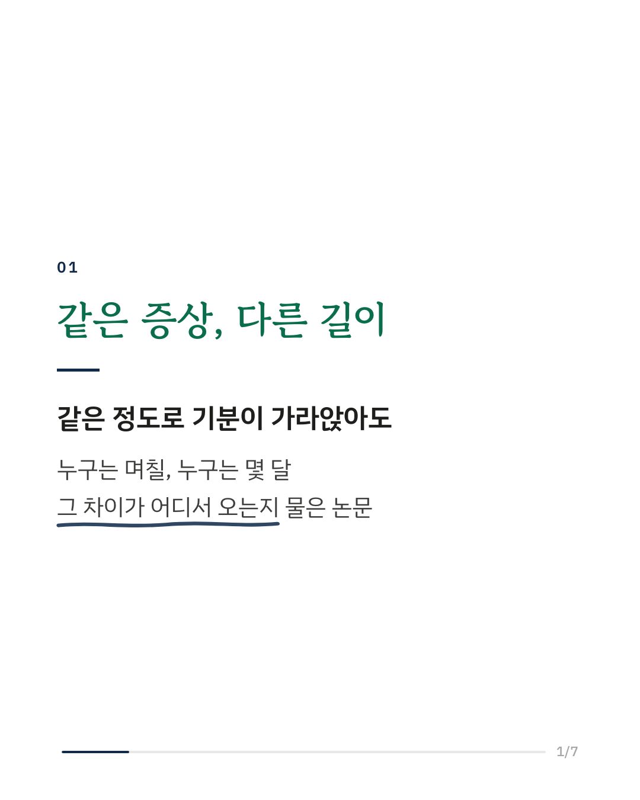
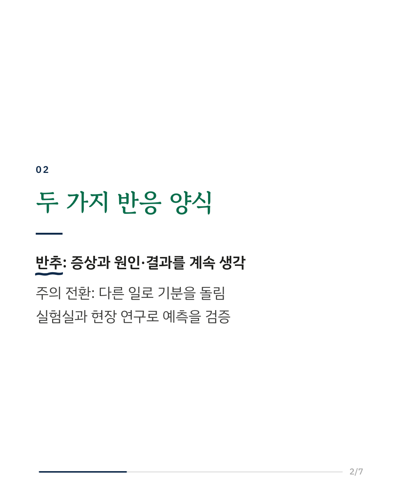
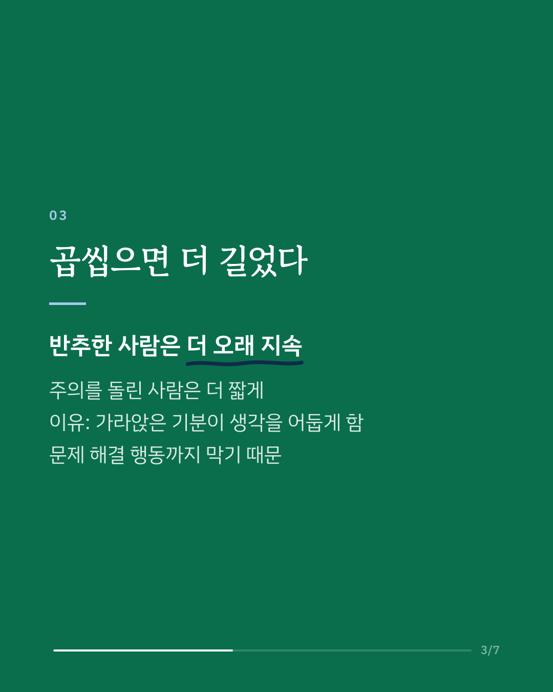
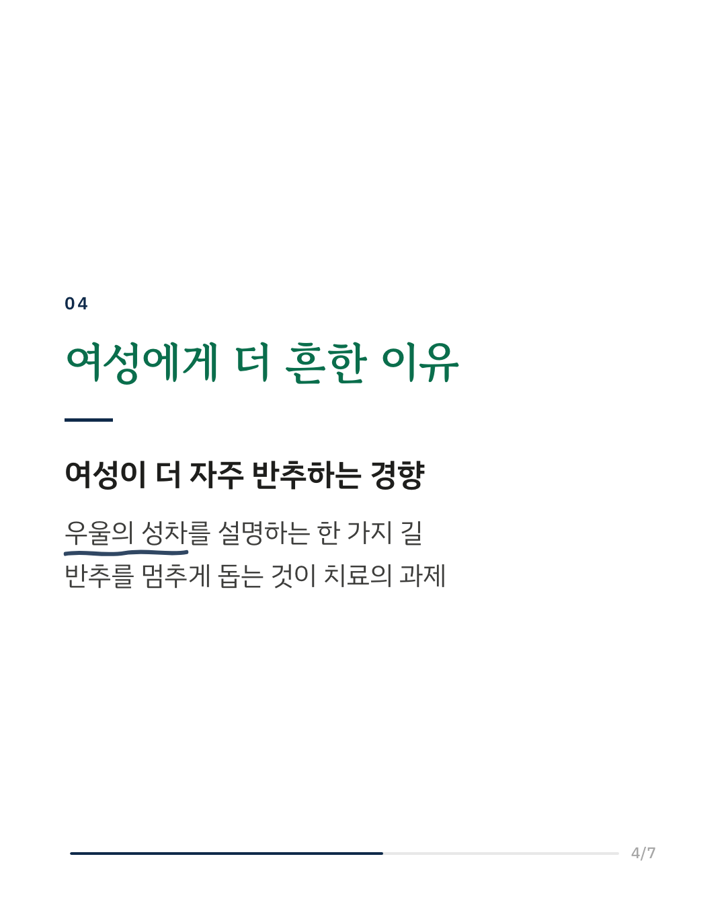
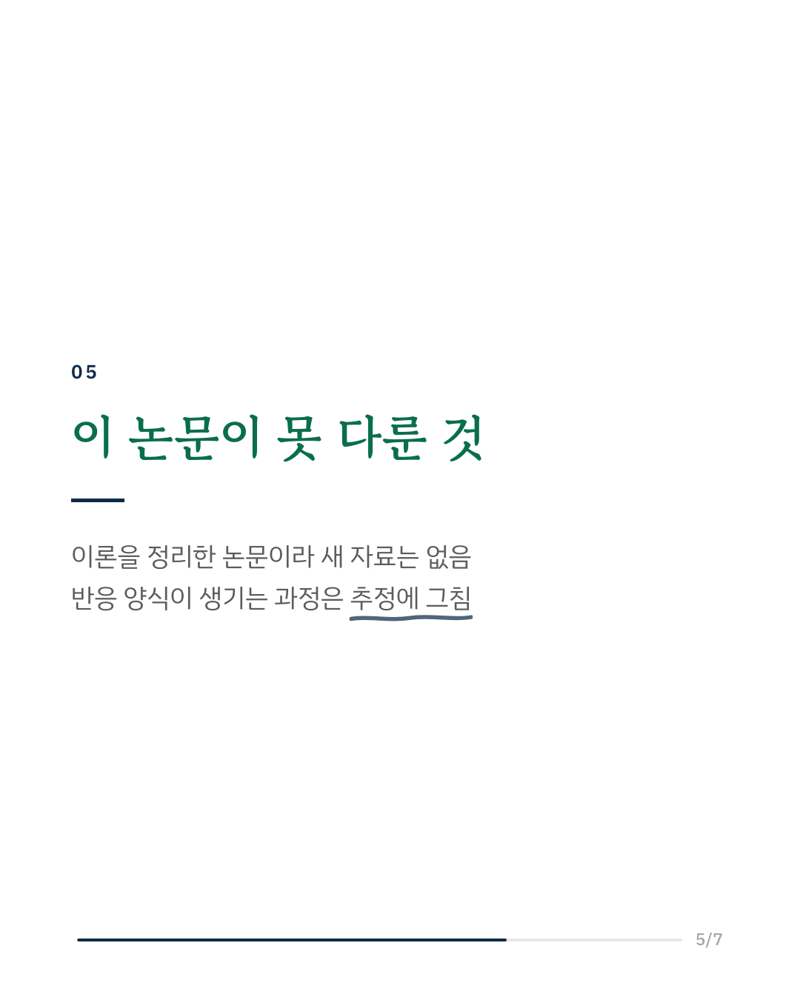
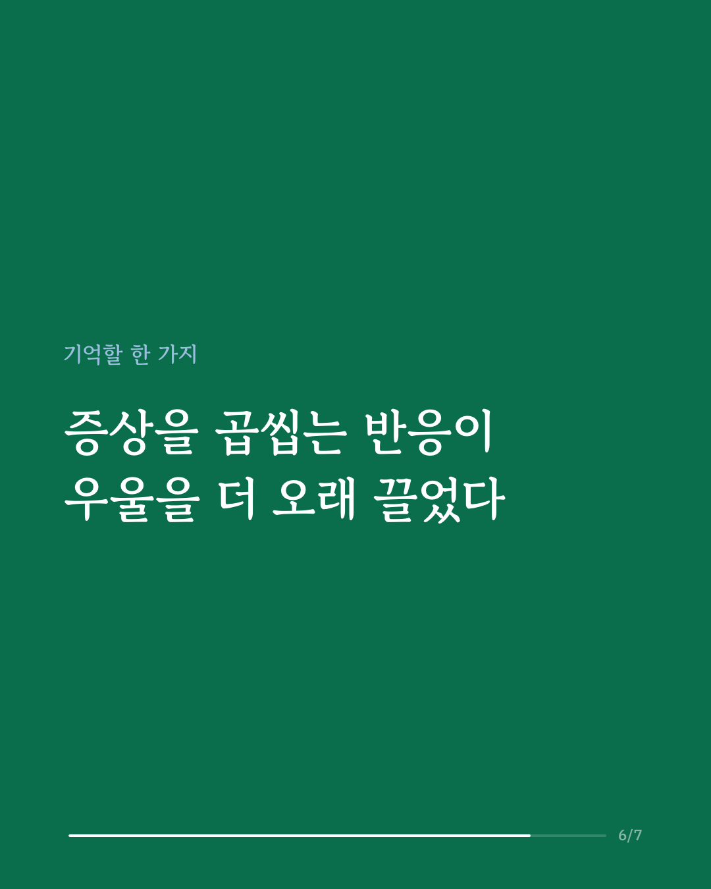
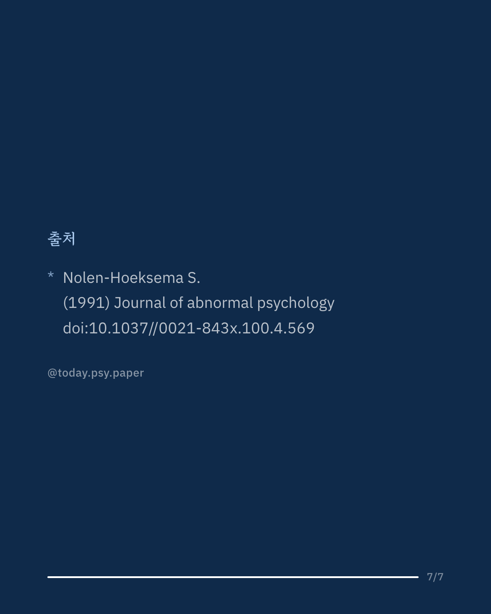

우울한 기분이 찾아왔을 때 사람마다 반응이 다릅니다. 어떤 사람은 왜 이런지, 앞으로 어떻게 될지 계속 생각하고, 어떤 사람은 다른 일을 하며 기분에서 벗어납니다. 1991년 수잔 놀렌-혹세마는 이 반응 방식의 차이가 우울증이 얼마나 오래 가는지를 좌우한다는 '반응 양식 이론'을 제안했습니다. 이 논문은 그 이론을 처음 체계적으로 정리한 글입니다. 핵심 주장은 이렇습니다. 자기 증상과 그 원인·결과에 주의를 붙들어 두는 반추 반응은 우울을 길게 끌고, 주의를 다른 데로 돌려 행동하는 반응은 우울을 짧게 끝냅니다. 반추가 해로운 이유는 가라앉은 기분이 생각을 더 어둡게 만들고, 문제를 풀기 위한 행동을 방해하기 때문입니다. 실험실 연구와 현장 연구 모두 이 예측을 지지했습니다. 저자는 여성이 남성보다 더 자주 반추하는 경향이 우울의 성차를 설명할 수 있다고 봤고, 반추를 멈추도록 돕는 방법과 반응 양식이 어떻게 형성되는지도 논의했습니다. 다만 이 논문은 새 자료를 보고한 연구가 아니라 이론을 정리한 글이고, 반응 양식의 형성 과정은 제안에 머물렀습니다. 이후 30년 넘게 이어진 반추 연구의 출발점이 된 논문입니다. Journal of Abnormal Psychology (1991), 'Responses to depression and their effects on the duration of depressive episodes' DOI: 10.1037//0021-843x.100.4.569 #임상심리 #정신건강정보 #심리학연구 #논문리뷰 #반추 #우울증 #다시읽는논문 #정서조절
python3 publish.py 1757671